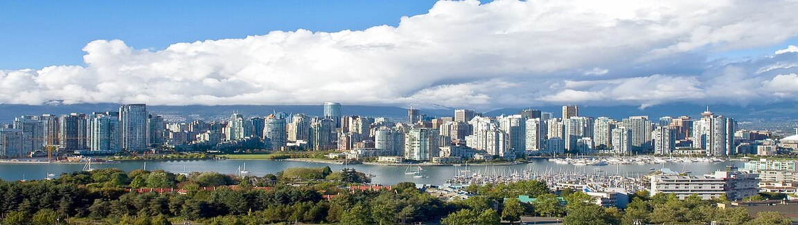

Recent Innovations
Photo Credit: Concord Pacific Master Plan Area by David G. Gordon via Wikimedia
{kind=link}
Examples of innovation from the World Economic Forum (https://www.weforum.org/agenda/2020/07/the-ocean-uplink-un-sdg-12-innovative-companies-saving-our-seas/).
The Ocean is critical to protecting the natural world and preserving the futures of the billions of people who rely on it for their survival. It's so important, the United Nations selected Life Below Water as one of its 17 Sustainable Development Goals (SDGs) key for achieving a better and more sustainable future for all.
Life Below Water also inspired the first mission for entrepreneurs and change-makers developing new innovations and solutions through UpLink, a digital platform for scaling innovation and driving progress toward the SDGs.
11 of these Uplink innovators recently presented their ideas to a panel of experts and judges from across the industry at the World Economic Forum’s Virtual Ocean Dialogues. Their solutions tackle challenges from freight shipping and illegal fishing to plastic pollution and the degradation of precious underwater reef habitats.
Cubex Global – This digital marketplace for sea freight can maximize empty shipping container space while simultaneously protecting the planet with a more sustainable approach to ocean transport.Oceanium – This innovative biotech start-up is developing products like biopackaging from sustainably-farmed seaweed.
Recyglo – This waste management and data analytics platform tackles plastic pollution at the source across southeast Asia.
Madiba & Nature – These innovators recycle plastic waste and inspire entrepreneurs in communities across Cameroon.
Unseenlabs – This special maritime surveillance service is breaking new ground in the fight against illegal fishing.
OLSPS – This analytics company is preventing illegal fishing through a fishery data management system that can record and report marine and vessel-based information.
Global Coralition – A coral reef restoration group using art as a vehicle to help alleviate poverty, implement water and waste solutions, and empower communities to activate grassroots climate change action.
Life Out Of Plastic – A clean-up campaign that empowers citizens to take action against plastic pollution.
Plastic LOOP – Innovators reducing plastic in dumpsites by formalizing waste picking.
The FlipFlopi Project – The world’s first sailing boat made entirely from waste plastic, created to bring attention to the problems of single-waste plastic.
Pinovo – A zero-emission circular sandblasting system that prevents paint-based microplastics on rigs (and other marine assets) from entering the ocean.